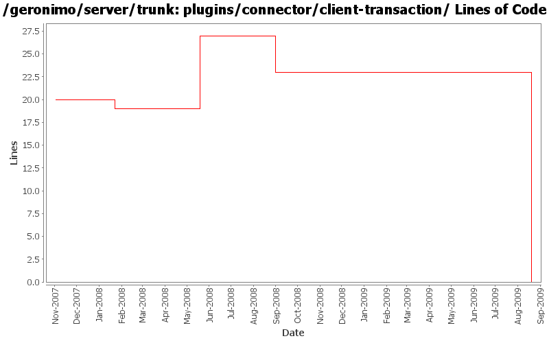

[root]/plugins/connector/client-transaction
 src
(0 files, 0 lines)
src
(0 files, 0 lines)
 main
(0 files, 0 lines)
main
(0 files, 0 lines)
 history
(0 files, 0 lines)
history
(0 files, 0 lines)

| Author | Changes | Lines of Code | Lines per Change |
|---|---|---|---|
| Totals | 15 (100.0%) | 47 (100.0%) | 3.1 |
| djencks | 7 (46.7%) | 33 (70.2%) | 4.7 |
| jdillon | 2 (13.3%) | 8 (17.0%) | 4.0 |
| gdamour | 1 (6.7%) | 5 (10.6%) | 5.0 |
| kevan | 3 (20.0%) | 1 (2.1%) | 0.3 |
| gawor | 2 (13.3%) | 0 (0.0%) | 0.0 |
remove j2ca 1.5 stuff in favor of j2ca 1.6.
0 lines of code changed in 3 files:
GERONIMO-4655 upgrade version to 3.0-SNAPSHOT, make a few things more consistent
1 lines of code changed in 1 file:
[maven-release-plugin] prepare branch 2.2
1 lines of code changed in 1 file:
Add persistence-jpa dependecy back as it was unintentionally removed
5 lines of code changed in 1 file:
GERONIMO-4239, sort of. Use transitive depenedencies in c-m-p everywhere. This may break stuff.... let me know
23 lines of code changed in 1 file:
GERONIMO-4013 Use more maven infrastructure to figure out dependencies. Don't base c-m-p on mojo pluginsupport. Use the same dependency code to do the same work in more places
8 lines of code changed in 1 file:
Update LICENSE and NOTICE files. Merge from 2.1 branch
0 lines of code changed in 2 files:
upgrade trunk to 2.2-SNAPSHOT
1 lines of code changed in 1 file:
(GERONIMO-3747) Fixed parentage of module groups, though most still need to have their modules put into the proper groupId
Updated groupId of *everything* under framework/** to org.apache.geronimo.framework, and did my best to update all references
7 lines of code changed in 1 file:
(GERONIMO-3771) Moved maven-plugins/* to buildsupport/*, updated groupId to org.apache.geronimo.buildsupport
1 lines of code changed in 1 file:
map transaction/car to client-transaction/car
0 lines of code changed in 2 files: